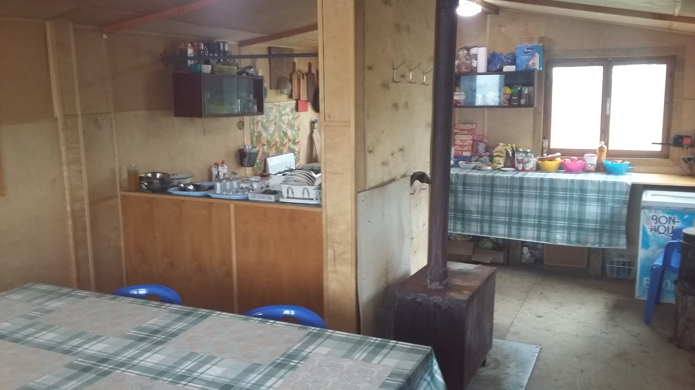

Фотогалерея
Всё снято на базе и рядом с ней
Насладитесь первозданной красотой озера Накомякен и плато Путорана
Все фотографии сделаны на базе и рядом с ней. Нажмите на снимок, чтобы рассмотреть.

Всё снято на базе и рядом с ней
Все фотографии сделаны на базе и рядом с ней. Нажмите на снимок, чтобы рассмотреть.